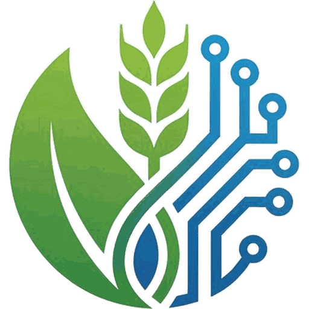

Donanım + Yazılım
Akıllı Sulama Sistemi
Toprak nem sensörleri ve hava durumu verisiyle otomatik sulama zamanlaması. Su tasarrufu ve verim artışı.
- Otomatik zamanlama
- Uzaktan kontrol
- Su tasarrufu
Yapay zeka destekli sensörler, veri analitiği ve sahada uygulama desteğiyle çiftçilerin verimini artırıyor, maliyetini düşürüyoruz.
Örnek gösterimdir

Hakkımızda
Mustech Agro (MUSTECH) olarak Türkiye'nin tarım sektörünü dijital dönüşüme taşımak için kurulduk.
Donanım, yazılım ve sahada destek hizmetlerini tek çatı altında birleştiren bütünleşik çözümlerimizle çiftçilerin kararlarını veriye dayandırmalarını sağlıyoruz.
Nasıl Çalışır
Tarladan toplanan veri, doğru zamanda doğru karara dönüşür.
Sensörler ve istasyonlar toprak, su ve iklim verilerini sürekli toplar.
Yapay zeka verileri işler, riskleri ve fırsatları erkenden tespit eder.
Sulama, gübreleme ve ilaçlama için net, uygulanabilir öneriler sunar.
Otomasyon ve saha ekibimizle öneriler tarlada hayata geçer.
Ürünlerimiz
Birlikte ya da ayrı ayrı çalışabilen, işletmenizin ölçeğine göre büyüyen ürün ailesi.
Toprak nem sensörleri ve hava durumu verisiyle otomatik sulama zamanlaması. Su tasarrufu ve verim artışı.
pH, nem, sıcaklık ve besin değerlerini gerçek zamanlı ölçen kablosuz sensör ağı.
Zararlı hayvanları özel ses frekanslarıyla tarladan uzak tutan, kimyasal kullanmadan ürününüzü koruyan kovucu sistem.
Tüm operasyonları tek ekrandan yönetin. Ekim planı, hasat takvimi, maliyet takibi.
Tarla başında mikro-iklim verileri toplayan kompakt istasyon. Yağmur, rüzgar, nem ve UV endeksi.
Toprak analizi ve bitki ihtiyacına göre gübre dozunu hesaplayan yapay zeka motoru.
Ücretsiz Tarla Araçları
Bulunduğunuz yerin hava tahminine göre ilaçlama, don, sulama ve hastalık riskini görün; ürününüzün su ihtiyacını hesaplayın.
Ürününüzü, gelişme dönemini, alanınızı ve sulama yönteminizi seçin; haftalık sulama suyu ihtiyacınızı ve damla sulamayla ne kadar tasarruf edebileceğinizi görün.
Tahmine dayalı genel bilgilerdir; uygulamadan önce ürün etiketine ve uzman görüşüne başvurun. · Hava verisi: OpenWeather
Hizmetlerimiz
Ürün satışının ötesinde; kurulum, eğitim ve sürekli teknik destek hizmetleri sunuyoruz.
Uzman ekibimiz cihazlarınızı tarlanıza kurar, yapılandırır ve devreye alır.
Çiftçi ve teknik personele yönelik ürün kullanım eğitimleri ve sertifika programları.
Telefon, uzaktan bağlantı ve saha ziyareti ile kesintisiz destek hizmeti.
Toprak, su ve iklim verilerini yorumlayarak karar destek raporları hazırlıyoruz.
Sensör kalibrasyonu, yazılım güncellemeleri ve donanım bakım paketleri.
İşletmenizin özel ihtiyaçlarına göre tasarlanmış çözümler ve entegrasyon hizmetleri.
Sıkça Sorulan Sorular
Cevabını bulamadığınız bir soru mu var? Sağ alttaki asistana sorun ya da bize yazın.
Fiyat; tarla büyüklüğüne, seçtiğiniz ürünlere ve kurulum ihtiyacına göre değişir. İletişim formundan bilgi verdiğinizde size özel teklif hazırlıyoruz.
Evet. Ürünlerimiz birlikte ya da ayrı ayrı çalışabilir; ihtiyacınız olan çözümle başlayıp sistemi zamanla büyütebilirsiniz.
Kurulumu uzman saha ekibimiz yapar: cihazları tarlanıza yerleştirir, yapılandırır ve devreye alır. Ardından kullanım eğitimi verir.
7/24 teknik destek veriyoruz: telefon, uzaktan bağlantı ve gerektiğinde saha ziyareti. Periyodik bakım paketlerimiz de var.
Merkezimiz Kayseri'dedir. Bölgenizi iletişim formunda belirtin; projenize göre değerlendirip dönüş yapalım.
Hava durumu ve su ihtiyacı sonuçları tahmine ve genel kabul görmüş katsayılara dayanır; karar vermeye yardımcı olur. Tarlanıza özel ve kesin veri için sensör ve istasyonlarımızı öneririz.
İhtiyacınızı anlatın, size uygun ürün ve hizmet paketini önerelim.
İletişim
Ürünlerimiz, projeleriniz veya iş birliği için bize yazın. En kısa sürede dönüş yapıyoruz.